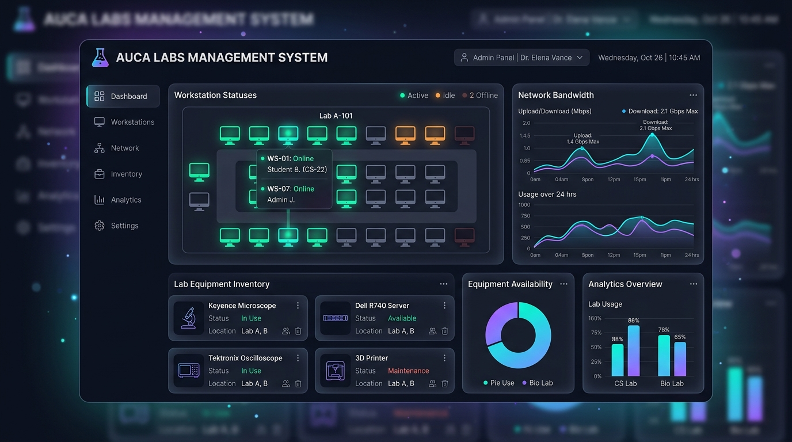

Flagship SolutionAUCA Labs Management System
Designed and developed a comprehensive computer laboratory administration platform to manage 100+ lab workstations, track hardware status, streamline student logins, and prevent system downtime.
In Active Use